Steward
分享是一種喜悅、更是一種幸福
掌機 - FC3000 - DRAM超頻
由於DRAM-VCC是固定2.5V輸出，因此，無法使用電阻方式改機，不過可以從如下位置割斷PCB，然後使用3.3V轉2.8V穩壓IC供電，因為DRAM超頻，必須確保DRAM-VCC有2.8V電壓
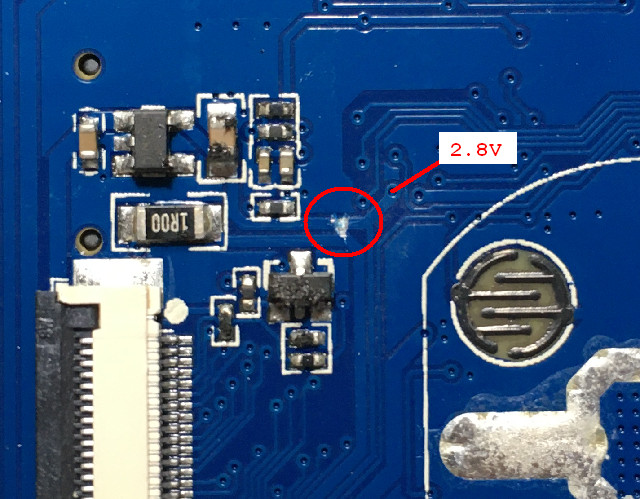
由於司徒目前手上沒有穩壓IC，因此，使用外部供電
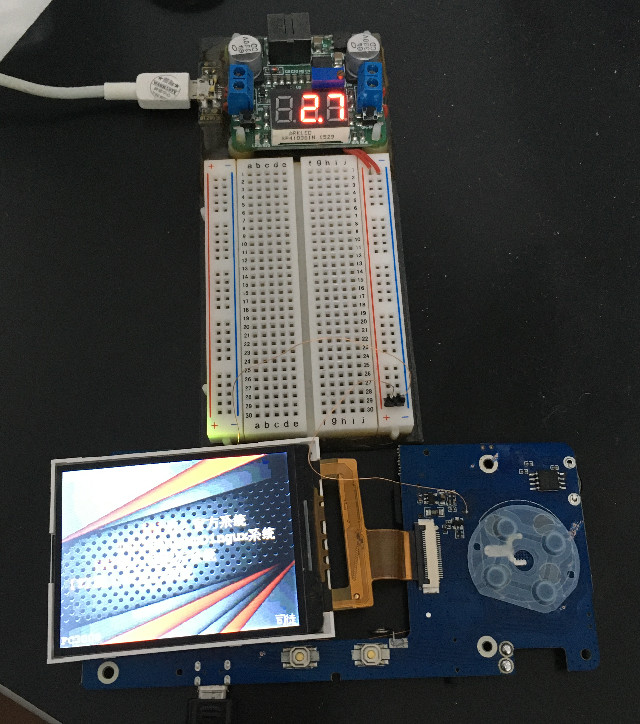
下載https://github.com/steward-fu/website/releases/download/fc3000/fc3000_dram_patch.zip， 在沒有改機的狀態下，有些機器(不是每一台都可以)可以把DRAM超頻到204MHz，因此，司徒製作了一個補丁工具，玩家只要執行run.sh就可以打補丁
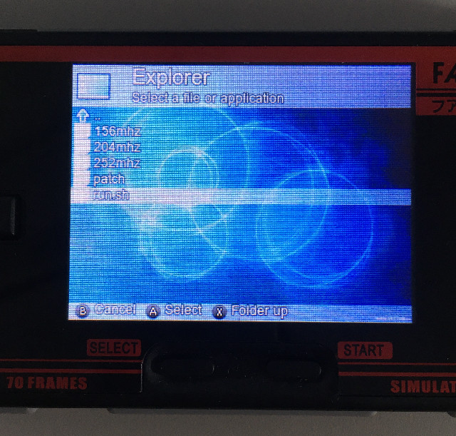
A：DRAM超頻到156MHz
B：DRAM超頻到204MHz
X：DRAM超頻到252MHz
Y：離開補丁工具
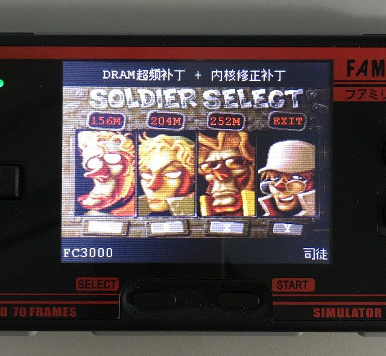
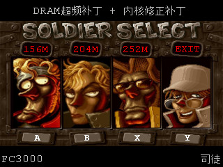
更新中
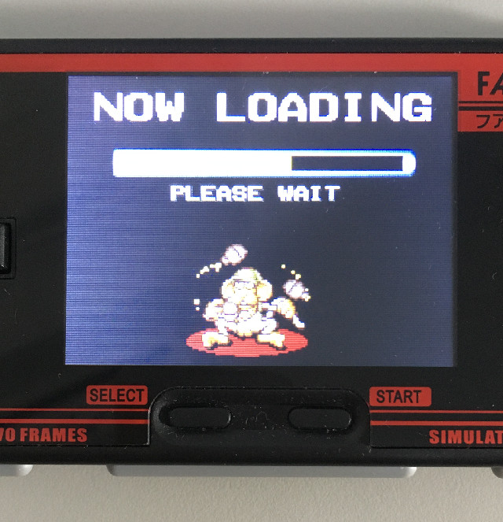
更新完成，重新開機就可以生效
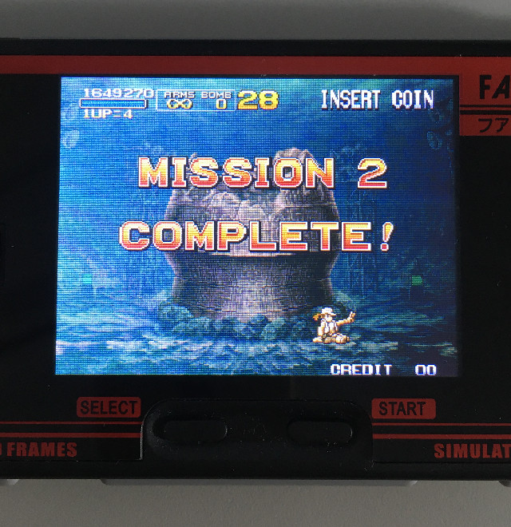
左上角會顯示目前DRAM超頻速度
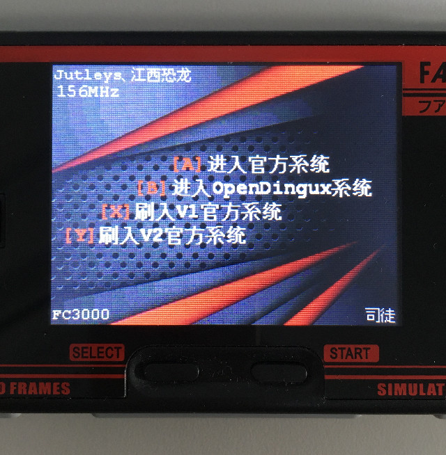
PocketSNES，新機動戰記，關閉FrameSkip，CPU=1.2GHZ，DRAM=156MHz，FPS=42
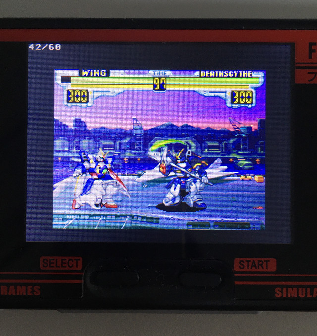
PCSX ReARMED，惡魔城，關閉FrameSkip，CPU=1.2GHZ，DRAM=156MHz，FPS=60，CPU使用率89%
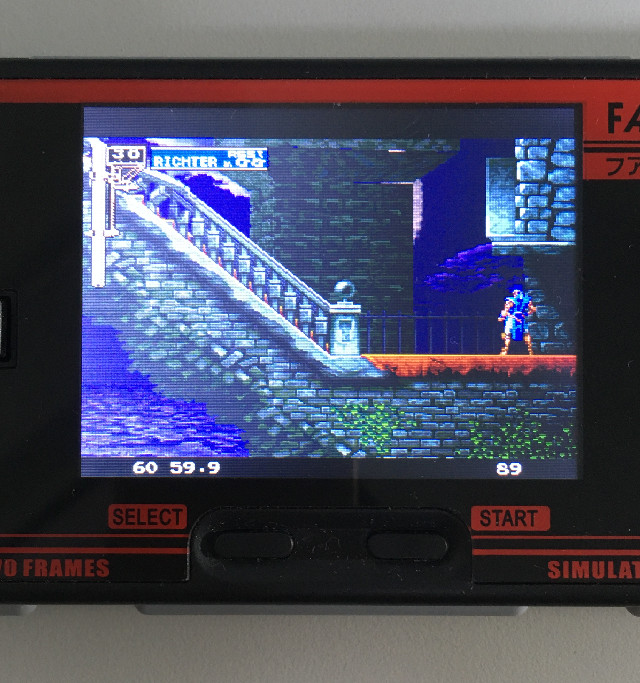
GNGEO，KOF98，CPU=1.2GHZ，DRAM=156MHz，FPS=60，CPU使用率80%
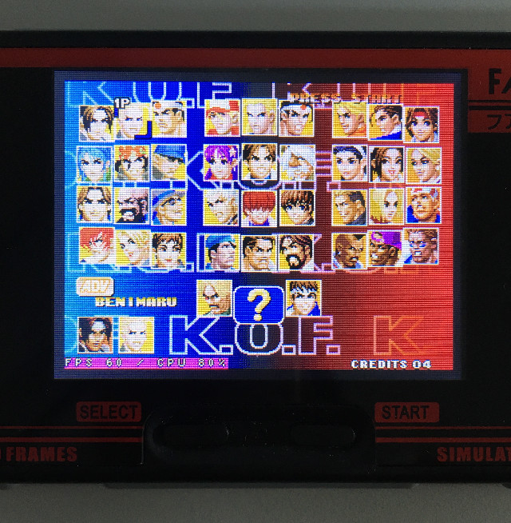
PocketSNES，新機動戰記，關閉FrameSkip，CPU=1.2GHZ，DRAM=204MHz，FPS=51
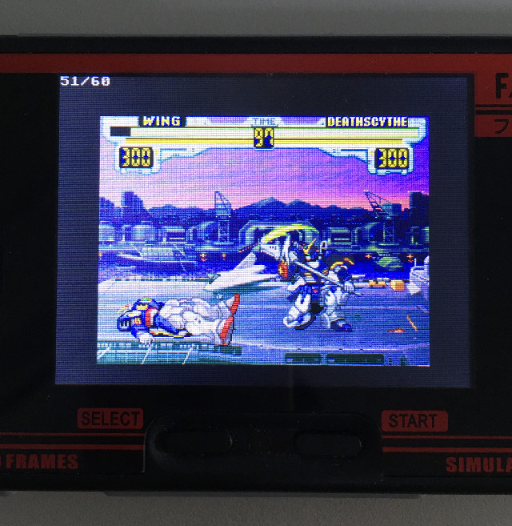
PCSX ReARMED，惡魔城，關閉FrameSkip，CPU=1.2GHZ，DRAM=204MHz，FPS=60，CPU使用率79%
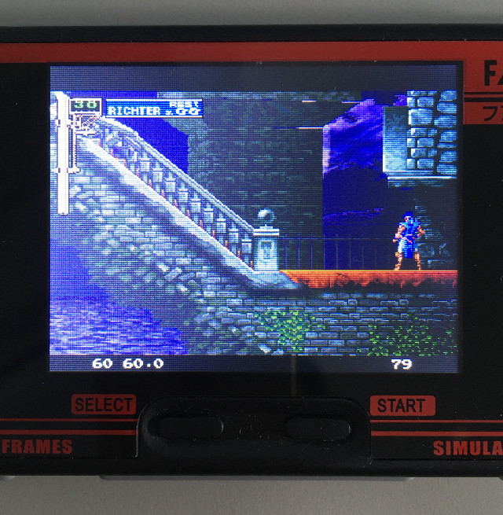
GNGEO，KOF98，CPU=1.2GHZ，DRAM=204MHz，FPS=60，CPU使用率68%
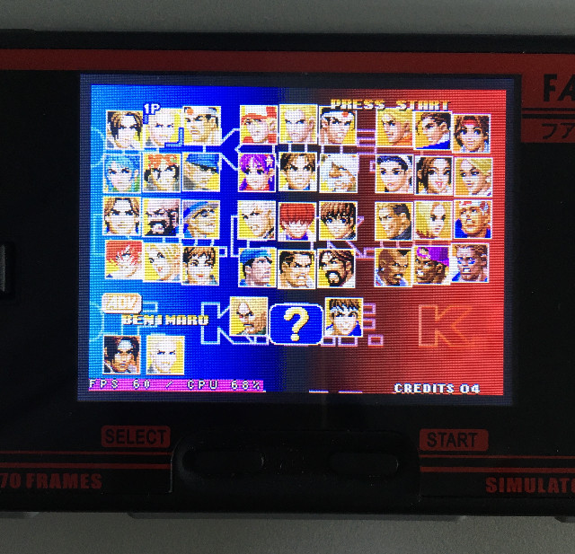